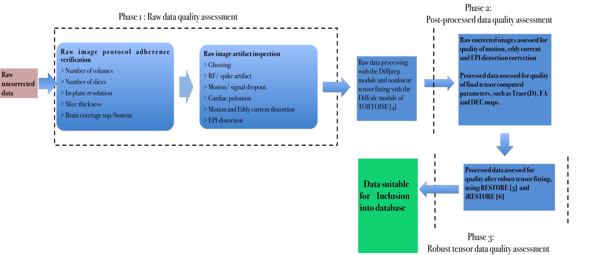

2. Schematic represenation of the TORTOISE pipeline¶
Note
If data has been acquired with oppostite phase encoded directions, then EPI correction will be performed with DRBUDDI after DIFFPREP.
[4] C.Pierpaoli et al; ISMRM,Stockholm,Sweden,2010, [5] Chang L-C et al; MRM (2005), [6] Chang L-C et al; MRM 2012